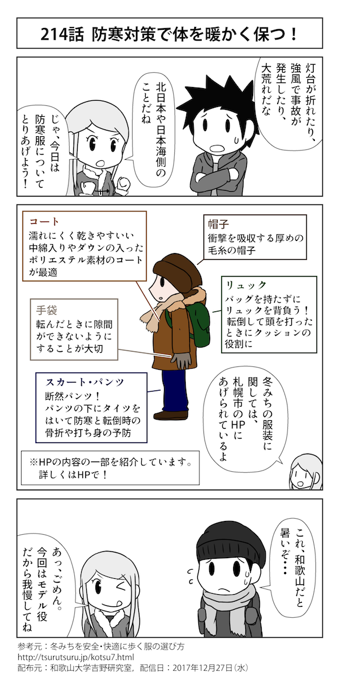

- 2017年12月14日【開催報告】防災ジオツアー企画ワークショップ
- 2017年12月13日【開催報告】ワダイの防災カフェin那智勝浦町（2017年度第9回）
- 2017年12月05日【開催報告】ワダイの防災カフェ in 田辺市（2017年度第8回）
- 2017年11月14日【開催報告】ワダイの防災カフェ in 田辺市（2017年度第7回）
- 2017年11月14日【開催報告】ワダイの防災カフェin那智勝浦町（2017年度第6回）
災害に関する情報を調べよう
市町村の防災情報を見てみよう
警報・注意報を調べてみよう
防災マップを作ろう・使おう
防災情報・防災4コマ漫画配信中
-
@AkariMapBotのツイート
-
防災4コマ漫画 最新号
